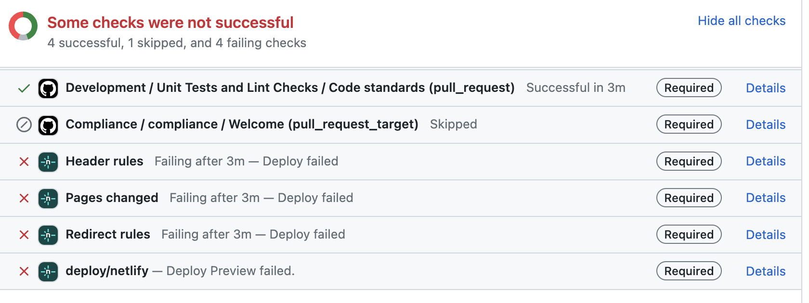

Maintainer Responsibilities¶
Overview¶
The maintainer for an open-source project fulfills many responsibilities, including setting up the project, managing issues, reviewing submittals, and leading the development community. In addition, the maintainer is often a prime contributor.
Establish Repository¶
The maintainer shall work with the sponsoring SDO to establish the open-source repository for the project.
Example
NTCIP repositories are hosted athttps://github.com/ite-org/.
Configure Project Settings¶
Issues and Discussions¶
The maintainer shall ensure that the issues and discussion pages are enabled for the ITS open-source project.
Note
Within GitHub, issues are enabled by default but the discussions tab is disabled. To enable, go to the settings tab and select discussions in the general section.
Pages¶
If the project includes documentation, the maintainer shall ensure that GitHub pages is enabled for the project.
GitHub Process
To activate GitHub Pages using MkDocs, create a gh-pages branch. The go to the settings tab and select pages from the left-hand menu. Set Source to "deploy from a branch" and then select the "gh-pages" branch and the /root directory.
Dependabot¶
If the project includes code, the maintainer may configure Dependabot to report issues or create pull requests to update dependencies with security vulnerabilities.
Note
Dependabot is a GitHub feature that monitors the project's dependencies and reports any possible security vulnerabilities. To learn more about this feature, please read through the GitHub documentation.
Set Up Project Files¶
Overview¶
The maintainer shall ensure the following files are provided in the repository when starting the project and maintained throughout the project:
- README.md
- CODE_OF_CONDUCT.md
- CONTRIBUTING.md
- LICENSE.md
- SECURITY.md
- .github/CODEOWNERS
- appropriate issue templates in .github/ISSUE_TEMPLATE/
- appropriate PR temapltes in .github/PULL_REQUEST_TEMPLATE/
- appropriate saved replies
Additionally, if the site includes documentation, the maintainer shall ensure the following files are provided in the repository when starting the project and maintained throughout the project:
- .gitignore
- mkdocs.yml
- .github/workflows/deploy.yml (generates the documentation)
- docs/index.md
- docs/stylesheets/extra.css
- overrides/main.html (adds a status badge to the page)
- overrides/partials/nav.html (changes the naviation heading to be "Contents")
- overrides/partials/toc.html (changes TOC heading to be the document name)
Finally, the site shall include installation guidance, which may be contained in the README.md file, a separate INSTALLATION.md file, or in project documentation.
GitHub Help
A template repository containing all of these files, which can be used to initialize new projects, is stored on the ITE GitHub Site.
Readme.md File¶
The README.md file shall contain an introduction to the open-source project. A good readme file should be clear, concise, up-to-date, and detailed. This file is located in your root directory and is displayed as the homepage of the repository within GitHub.
The README.md file shall contain the following information:
- project title
- information on how to access the current documentation for the project
- information on how to access prior releases of the project
- project summary, including its status and overview
- Acknowledgements of relevant funding sources, sponsors, and other open-source projects
- installation guidance
- tech and tools used in the project
- link to the code of conduct
- link to discussion forum for the project
- link to the issues page for the project and the types of issues accepted for the project
- link to the contributing guidelines
- link to the open source license
Note
A README file is written in the Markdown language, a popular language used in open source documentation like READMEs. The readme file does not use any of the special codes introduced by MkDocs or Materials for MkDocs.
Examples of good README files
Installation Guidance¶
The installation guidance may be contained within the README.md file (e.g., if it is simple), be a separate file, or reference a section within the project documentation.
This guide identifies the tools and technology used by the project and includes instructions for the following:
- forking the repository
- cloning the repository
- installing the dependencies
- setting up the environment variables
- setting up the database, if applicable
- running the project locally
The best way to test your guide is by setting up the project locally using your guide. If you encounter issues getting your project to work, you will discover it quickly and can update the documentation to add or clarify the missing piece.
Code of Conduct File¶
The CODE_OF_CONDUCT.md file shall define the rules and behaviors that are to be followed for the project.
The CODE_OF_CONDUCT.md file should consist of a reference to the ITS Open-Source Code of Conduct with any exceptions and extensions identified.
Note
It is expected that exceptions and extensions to the code of conduct will be rare.
Contributing File¶
The CONTRIBUTING.md file shall define the rules for contributing to the project.
The CONTRIBUTING.md file should consist of a reference to the ITS Open-Source Contributor Responsibilities with any exceptions and extensions identified.
The CONTRIBUTING.md file should identify specific types of conventions that apply to the project.
Example
The ITS Open-Source Process project only has documentation and while the resulting specification discusses coding conventions, the project does not include any code, ASN.1 or MIBs.
Note
Areas where exceptions and extensions are expected to occur include:
- documentation conventions (e.g., extensions for consistency in presenting project-specific information),
- coding conventions (e.g., for languages not discussed in the ITE Open Source Process documentation, special naming conventions),
- testing and linting requirements
- the process to claim ownership pf issues (e.g., WG approvals),
- guidelines for commit conventions
- requirements for creating pull requests (e.g., fields that need to be included), and
- requirements for pull requests to be approved (e.g., WG approvals)
License File¶
Per The Legal Side of Open Source
Making your GitHub project public is not the same as licensing your project. Public projects are covered by GitHubs Terms of Service, which allows others to view and fork your project, but your work otherwise comes with no permissions.
If you want others to use, distribute, modify, or contribute back to your project, you need to include an open source license. For example, someone cannot legally use any part of your GitHub project in their code, even if its public, unless you explicitly give them the right to do so.
The LICENSE file shall be a well-known Free and Open Source license.
For NTCIP documentation projects, including standards and ASN.1, the license should be CC BY 4.0.
Note
The CC BY license is designed for documentation and other creative works where uers are allowed to use, distribute, modify, and contribute but any derivative works are required to give attribution to the source of the material and cannot "implicitly or explicitly assert or imply any connection with, sponsorship, or endorsement by the licensor."
For NTCIP projects involving code for a computer program, the license should be the Gnu Lesser General Public License Version 3.
Note
The LGPL v3 license is designed for compilable software that runs on a machine. Like the CC BY license, it allows uers to use, distribute, modify, and contribute material as long as they give attribution to the original source and does not provide any rights to the names, trademarks, or logos of the original source.
Security file¶
The SECURITY.md file shall indicate how to provide reports of security issues through private channels to prevent exposure of the vulnerabilities prior to their fix.
Code Owners File¶
The .github/CODEOWNERS file shall conform to the rules defined in the official GitHub documentation.
Note
This ensures that the correct maintainers are notified when PRs are submitted.
Example
By opting-in to "require approval" and "require review from code owners", a WG can require a majority of voting members of the WG to approve any pull request before it can be merged into the protected branch. This can reduce the chance of merging pull requests that can break production.
Issue Templates¶
The maintainer shall define appropriate issue forms.
The maintainer shall develop the forms using YAML per the GitHub instructions.
Note
Issue forms allow the maintainer to ensure commenters provide key information (or at least provide text for specific fields) when they report issues making the triage process, and the review of pull requests easier to perform. Additionally, future contributors can benefit from these templates by understanding the history of changes made, which can help them debug or understand the code involved.
You can create various issue forms, such as bug reports, feature requests,
documentation updates, etc. Each form can specify which fields are required,
such as the steps for reproducing the bug or a details section for a feature
request. The form can also be designed to automatically attach specific labels
likefeature, needs triage, or bug to quickly identify the type of issue.
Example
.github/ISSUE_TEMPLATE/documentation_bug.yml
or .github/ISSUE_TEMPLATE/documentation_enhancement.yml
Pull Request Templates¶
The maintainer shall define appropriate pull request templates.
Note
GitHub currently only supports markdown templates for pull requests rather than YAML forms. Nonetheless, the templates serve a similar purpose in that they guide contributors in providing specific and structured information when opening pull requests in your project.
Tip
You can learn more about creating a pull request template on the official GitHub documentation.

Saved Replies¶
Sometimes, you repeatedly write the same reply to issues or pull requests. Clear communication between maintainers and contributors is crucial. So, when you write all comments manually, your messages will no longer be consistent and may be unclear. You can create saved replies when you frequently respond to issues and pull requests with the same comments.
Saved replies allow you to create a reusable response to issues, pull requests, and discussions and use it across repositories. It will save you time responding to contributors while keeping the consistency of your message. You can always modify your replies if necessary.
Read the GitHub documentation for complete instructions about how to create saved replies.
Gitignore File¶
If there are any files that are likely to exist within the project directory
that should not become a part of the repository, the maintainer shall
include a .gitignore file.
Example
Projects that include documentation that is based on MkDocs typically have
a site directory generated by MkDocs as a part of the process to generate
a static website for review. This directory is not intended to be part of
the registry as GitHub will produce its own generated site. In this case,
the project is to include a .gitignore file that contains the line "site/",
as for this project.
Mkdocs.yml File¶
If the project includes documentation using MkDocs, the maintainer shall
define a mkdocs.yml file.
Note
The mkdocs.yml file defines directives to the mkdocs engine when generating the static website. For example, it defines
- name of the site,
- URL of the site,
- navigation menu,
- theme,
- extensions/plugins used, and
- other details
Deploy.yml File¶
If the project includes documentation using MkDocs, the maintainer shall
define a .github/workflows/deploy.yml file that deploys the MkDocs site to
GitHub Pages.
Note
The deploy.yml file can be used to automate actions when pull requests are merged with the project. For example, for projects that use MkDocs, the deploy file can ensure that the GitHub Pages site is updated with the new material when a pull request is merged.
Index File¶
If the project includes documentation using MkDocs, the maintainer shall
define a docs/index.md file that provides a cover page for the document.
Extra.css File¶
If the project includes documentation using MkDocs, the maintainer shall
define a docs/stylesheets/extra.css file that defines the heading styles to
be used for the body and the annexes (i.e., adding setion numbers in front of
headings).
The maintainer shall ensure that this badge only changes per the approval process defined for the project.
Main.html File¶
If the project includes documentation using MkDocs, the maintainer shall
define a overrides/main.html file that provides a badge that identifies the
status of the project files.
The maintainer shall ensure that this badge only changes per the approval process defined for the project.
Note
By default, MkDocs does not display a status badge. Adding this badge ensures that users are aware of the status of the material located on the page.
Nav.html File¶
If the project includes documentation using MkDocs, the maintainer shall
define a overrides/partials/nav.html file that overrides the title assigned
to the left-hand navigation menu to be "Contents".
Note
By default, MkDocs entitles the left hand navigation (i.e., navigation of pages) with the title of the site. To better align with NTCIP formats, the nav.html file is provided to change this to "Contents".
Toc.html File¶
If the project includes documentation using MkDocs, the maintainer shall
define a overrides/partials/toc.html file that overrides the title assigned
to the navigation menu on the right side of the screen.
Note
By default, MkDocs entitles the right-hand navigation (i.e., the contents of the current page) as "Contents". To better align with NTCIP formats, the standard toc.html file changes this to the title of the current page.
Define Project Structure¶
Once the project is established, configured, and the loaded with the initial project files, the maintainer shall establish the plan for the project by defining issues along with any appropriate stub files that can provide further guidance.
Note
This includes defining the plan for all aspects of the project (e.g., documentation and code).
Issue Triage¶
Overview¶
Once issues are being created for the project, the maintainer will need to triage these issues to ensure that they contribute to the project plan and so that they can be claimed by contributors.
Learning to triage issues is essential for any open-source maintainer. This involves going through the existing list of open issues and prioritizing them in order of importance. Some open issues will be critical bug fixes, while others might be nice to have feature requests. Sometimes, you might have issues opened for things that are not a right fit for the project.
Triage Pre-Assessment¶
Overview¶
Prior to performing any detailed triage, it is important to screen reported issues that are not appropriate for further investigation.
Dealing with Spam¶
When a comment is spam, clearly combative, or unhelpful, the maintainer should
avoid direct engagement, label the issue as spam, close the issue, and move on.
Example
This project is terrible! Nothing works, and your code is garbage. I can't believe anyone would use this. Fix it ASAP!!!
Insufficient Information Issues¶
When a comment does not provide concrete details about the issue, the maintainer should respond by requesting more information.
Example
If it is a bug report, ask for more details on reproducing it. If it is a feature request, ask for clarification on style or functionality changes.
If the commenter does not respond within a week, the maintainer should message them again for more details.
If a few weeks pass and the issue is not considered critical, the maintainer may close the issue.
Stale Issues¶
The maintainer may may label issues that have not been worked on for months
as stale.
Example
An issue reported on a portion of a project that has been significantly edited by other contributions.
If the maintainer wishes to resurrect a stale issue, the maintainer shall
go through the normal triage process, including adding and removing labels as appropriate.
If the maintainer believes a stale issue no longer applies, the maintainer
should close the issue. This process may be automated (e.g., using an
action like Close Stale Issues and PRs.
Ensuring Proper categorization¶
For issues that have sufficient information and are not spam or stale, the
maintainer shall add and/or remove labels as appropriate for proper management.
Note
Most ITS standardization projects are expected to have a small number of contributors, in which case, the following set of labels are generally appropriate. Projects with more contributors should consider a fuller range of labels as adopted by the open-source community.
The following labels should be considered for most specification projects:
-
General Type Labels
- github automation: an issue related to the automated github scripts in testing or generating the documentation.
- question: Indicates a general inquiry or a request for clarification about
how something works. Questions should be moved to the discussion tab, but the
issue can be labeled with
questionand closed.
-
Type Labels for Documentation
- documentation bug: Identifies a reported problem or flaw in the documentation.
- documentation enhancement: Refers to a suggestion or request to improve or add informative text in the documentation.
- new user need: Suggests a new user need to be added in the document.
- user need modification: Suggests a modification to a user need in the document.
- new requirement: Suggests a new requirement to be added in the document.
- requirement modification: Suggests a modification to a requirement in the document.
- dialog modification: Suggests a modification to a dialog in the document.
- ASN.1 modification: A change to the ASN.1 or MIB.
-
Type Labels for Code
- bug: Identifies a reported problem, flaw, or unexpected behavior in the code.
- enhancement: Refers to a suggestion or request to improve or add features to the project.
- feature: Used for issues proposing new functionality or significant changes.
- refactor: A change in the codebase that improves its structure or readability without altering its functionality.
- test: Issues related to unit tests, integration tests, or overall testing improvements.
- Priority Labels (Help prioritize issues based on urgency or importance)
- critical: Indicates urgent issue related to an existing release that needs to be addressed immediately (e.g., perhaps requiring its own release to formalize in a timely manner).
- high priority: Indicates urgent issue that needs to be addressed as soon as possible to allow for other tasks to proceed for the current update but not critical.
- medium priority: Important issue to address prior to next release that relates to functionality but not high priority.
- low priority: Non-urgent issues that may be tackled if theres extra time or resources available.
- Status Labels (Track the progress of an issue or pull request)
- in progress: The issue is currently being worked on.
- blocked: Work on this issue is delayed or cannot proceed due to a dependency or external factor.
- needs discussion: Indicates that the issue or pull request requires further conversation or clarification before proceeding.
- triage: Newly created issues that need to be reviewed, categorized, and prioritized.
- ready for review: The pull request is awaiting review by project maintainers.
- duplicate: Marks an issue as being identical or closely related to an already existing issue.
- wontfix: Indicates that the maintainers have decided not to address the issue, either due to scope, relevance, or priority.
- Difficulty or Effort Labels (Classify the expected effort required to
address the issue)
- good first issue: Meant for new contributors; these are usually easy-to-solve problems with clear instructions.
- beginner-friendly: Similar to good first issue, these are relatively simple problems that beginners can address.
- help wanted: Indicates that maintainers need assistance with the issue, open to contributions.
- complex: Issues that are challenging, requiring significant experience or effort to resolve.
- Version or Milestone Labels (Track issues by release or milestone)
- compatibility: Associates an issue or pull request with a specific version or release milestone.
- next release: Indicates that the issue is planned for inclusion in the upcoming release.
- future: Refers to issues or features planned for future releases beyond the current roadmap.
Triaging Bugs¶
The maintainer should verify the existance of any reported bug.
Note
If the maintainer expects to assign the issue to himself, the verification step can be postponed until the action is undertaken to correct the bug. If the bug cannot be verified, reply to the issue's original poster to gain more information and context.
Triaging Feature Requests¶
The maintainer shall ensure that any new feature request fits into the vision for the project.
The maintainer shall communicate with the original poster of the issue to determine how to best deal with the issue, including:
- assigning to the originator, if they express a willingness to contribute a solution,
- assigning to the originator and someone else (e.g., a maintainer), if the originator is willing to contribute to a solution but is unwilling to develop and propose it,
- adding a
help wanted, if the maintainer wishes to look for another contributor, or - assigning it to himself or another core team member, if the maintainer expects the issue to be addressed by them in a timely manner.
Note
Complex issues are best assigned to core team members.
Triaging Duplicate Issues¶
When assigning a duplicate label, the maintainer should respond to the
originator of the issue.
Example
Thank you for taking the time to open this issue. Another team member is working on this feature, which will be added soon. As a result, we are going to close this issue.
Triaging Rejected Issues¶
When assigning a wontfix label, the maintainer should respond to the
originator of the issue.
Example
Thank you for being so interested in our project. The feature you have proposed would not be a good fit for this project's current scope and direction. At this time, we will not be moving forward with this feature.
Reviewing Pull Requests¶
Overview¶
It is the maintainer's responsibility to ensure that the suggested code or documentation update meets the standards of the project and doesn't introduce any new issues for the project. You will also need to work with the contributor to help solve issues they encounter.
Pull-Request Pre-Assessment¶
Spam Pull Requests¶
For any pull request deemed to be spam, the maintainer should label the
request as spam, close the pull request, and not respond to the contributor.
Example
- whitespace changes to the README file or other files
- random changes to files without an accompanying issue or explanation
- numerous links to unrelated websites or promotes products/services
- plagiarized content from other sources without permission or proper attribution
Low-Quality Pull Requests¶
For a pull request deemed to be of low quality, the maintainer should reach out to the author, explaining what needs to be added and what changes need to be made.
Example
- unfinished pull requests that do not address the entire issue
- code that does not fit within the established style guide for the project
- incomplete pull request forms that do not provide sufficient information on what changes were made
- address multiple issues at once and make it challenging to review
Note
Most of the time, low-quality pull requests are due to contributors not being aware of the rules to follow and need extra explanation and time to improve their pull requests.
Stale Pull Requests¶
If the maintainer is unable to get a response from a contributor regarding an issue after a repeated attempts over several weeks, the maintainer may reassign the associated issue; if there is an associated pending pull request, the maintainer shall either close the pull request or take it over (i.e., by using the code in the pull request as the starting point for additional modifications).
Testing¶
Overview¶
The maintainer shall review each contribution to ensure that all tests pass, the contribution works as expected without introducing errors.
Automated Testing¶
The maintainer should maintain automated tests to protext against errors.
GitHub Help
GitHub allows maintainers to set up an automated test suite that runs on every pull request and merges into the main branch. Good automated test suites can help catch bugs from going into production and breaking the application.
Example
Is Website Vulnerable finds publicly known security vulnerabilities in JavaScript libraries' websites
Failing Automated Tests¶
If a maintainer receives a pull request that fails automated testing, the maintainer should wait a few days to allow the contributor to resolve the issue independently.
If the contributor does not resolve the issue within a few days, the maintainer shall contact the contributor to see if they need help.
If the failing test is unrelated to the contributor's changes, the maintainer shall let the contributor know that the error is safe to ignore and that it will be fixed in another pull request.
If the contributor fails to respond after repeated attempts over several weeks or months, the maintainer should close the pull request and move on.
Note
If multiple contributors fail the same set of tests, the tests may need improvement.

Code Reviews¶
Prior to accepting any pull request, the maintainer shall review all proposed changes to ensure that they are designed to address the reported issue as claimed and that they conform to the projects coding and documentation guidelines.
Note
Performing this test before manual testing is useful as it will provide insights into the types of manual tests that are most appropriate.
Manual Testing¶
Prior to accepting a significant pull request, the maintainer should manually test the project using his local machine.
Note
If a pull request involves a small change to documentation or code, manual testing is less important, but the maintainer is the last line of defense before a pull request is merged in, which can potentially introduce new issues.
Effective Feedback¶
If the maintainer discovers a problem with the pull request, the maintainer shall respond to the contributor with a detailed account of the problem.
Note
Sometimes, it helps to include a screenshot or screen recording. If the automated tests did not catch the problem, it might be worth creating a separate issue to update the test suite.
The maintainer shall indicate the importance of each problem identified in
the contribution with critical, high, medium, or low.
Note
Feedback provides a public log of how an issue has been addressed and needs to be informative, constructive, and helpful for the reviewer, contributor, and others that might read it at a later date.
Example
High: Please use more descriptive variable names for better readability. For
example, revise the code to replace variable d with duration.
Missing Tests¶
Significant contributions of code should be accompanied with tests to help ensure that everything is working as expected.
Note
If the contribution does not include such tests, reach out to them to determine how they tested their contribution and let them know what parts need to be tested.
Creating a Release¶
The maintainer shall create a formal release for each version of the document approved for release by the responsible WG or committee.
GitHub Help
Within GitHub, this can be achieved through theReleases tab.
The maintainer shall assign a tag to the release that indicates the version number per Semantic Versioning 2.0.0.
Note
This produces a version number in the format of
<major>.<minor>.<patch>[-<pre-release>] format, where
- the
majornumber increments (and the other values reset to 0) when non-backwards compatible changes are made, - the
minorversion increments (and patch resets) when features are added in a backwards compatible manner, - the
patchincrements when backward compatible fixes are made without any new features, and - an optional
pre-releasecode (preceded by a hyphen) indicates versions under development and must have a sequential alphanumeric identifier
The maintainer shall attach a PDF and zip archive of the website in versioned directories in the gh-pages branch.
gh-pages/
index.html (latest version)
v1.0.0/
v1.0.1/
v1.1.0/
v2.0.0/
GitHub Help
This can be automated with GitHub actions.
Note
When deploying a new version, ensure the previous version is moved into its own directory before overwriting the index.html and other files for the new release.
Example GitHub Action
name: Deploy MkDocs Site and Generate PDF
on:
push:
tags:
- 'v*'
jobs:
build:
runs-on: ubuntu-latest
steps:
- name: Checkout code
uses: actions/checkout@v3
- name: Set up Python
uses: actions/setup-python@v4
with:
python-version: '3.x'
- name: Install dependencies
run: |
pip install mkdocs-material
pip install weasyprint
- name: Build MkDocs site
run: mkdocs build
- name: Generate PDF
run: |
weasyprint site/index.html site/docs.pdf
env:
WEASYPRINT_BASEURL: 'https://yourusername.github.io/repository-name/'
- name: Deploy to GitHub Pages
uses: peaceiris/actions-gh-pages@v4
with:
github_token: ${{ secrets.GITHUB_TOKEN }}
publish_dir: ./site
- name: Upload PDF to release
if: github.ref_type == 'tag'
uses: actions/upload-artifact@v3
with:
name: docs-${{ github.ref_name }}.pdf
path: site/docs.pdf
Building a Community¶
Overview¶
A vital component of any open source project is its community. Building a strong community can help accelerate the growth of your open source project. As new contributors discover and start to contribute to your project, you will want to create spaces for communication and collaboration.
If your project is on GitHub, you can use GitHub Discussions as a way for contributors to post questions and facilitate conversations. WG meetings should be advertised on the discussion board to encourage participation.
Promptly Respond and Address Concerns¶
Maintainers should establish a schedule to review incoming issues and pull requests and post this schedule within the discussion forum.
Note
It is important to set expectations as to how fast maintenance issues are likely to be addressed. This timline might vary considerably across ITS open-source projects and during teh lifetime of any one project (e.g., there are often periods of moew active development and less active development).
The maintainer should set up GitHub Actions to automate responses that welcomes each new contributor and provides an estimated time by which the issue triage or PR review can be expected
Note
You can learn how to set one up inthis article.
Advanced Features¶
Overview¶
Leveraging GitHub Actions to bring Continuous Integration / Continuous Delivery or Deployment (CI/CD) into your workflow directly in your repository will let you run code, test, build, and deliver or deploy software with simple and secure workflows. Automating these tasks will speed up your deployment process.
Using Git, GitHub, and GitHub Actions to build a CI/CD pipeline should give you confidence in your code.
Below are some helpful resources to help you build a CI/CD pipeline with GitHub Actions:
- GitHub Docs: The complete CI/CD solution
- How to build a CI/CD pipeline with GitHub Actions in four simple steps
There are many types of actions that you can set up for your project, depending on what you need. Below are some GitHub Actions that you usually find across repositories:
Linter¶
Most open source repositories have linters that run on each pull request. Linter is a tool for detecting potential errors and maintaining a consistent code style in a project. Super-Linter is one of the most used actions. This action can help you maintain code quality and achieve a more readable and consistent style.
Code Scanning Tools¶
Code scanning is a tool for detecting security vulnerabilities, possible bugs, and errors in code. You can use GitHub's code scanning feature and configure tools like CodeQL, which GitHub maintains, or third-party scanning tools such as SonarQube.
Creating and Customizing Actions¶
Actions of note:
- GitHub Marketplace
- Take Action:
allows contributors to assign themselves to an issue by typing the
.takecommand in the issue's comment. - Triage Action:
blocks the Take Action whenever a
needs triageorcore team worklabel exists.
You can read more about GitHub Actions and how to create one in the official documentation.
Projects¶
Keeping track of your issues is getting more challenging as your project progresses. A great tool that can help you organize and track your issues is Projects on GitHub. With projects, you can efficiently manage your project's features, roadmaps, or releases as they're built from and integrated with issues and pull requests that you add.
You can choose a template for your project. One of the templates is the "Kanban" template. Here, you can create notes and place the existing issues and pull requests in the "Backlog", "Ready", "In progress", "In review", and "Done" columns. This will make it easy for you and your team to track the progress of your project.
To create a new project:
- Navigate to your GitHub profile and click the "Projects" tab.
- Click the green "New project" button.
- Choose a template.
- Name your project and click the "Create project" button at the bottom.
Please read the GitHub documentation to learn more about adding items to your project.